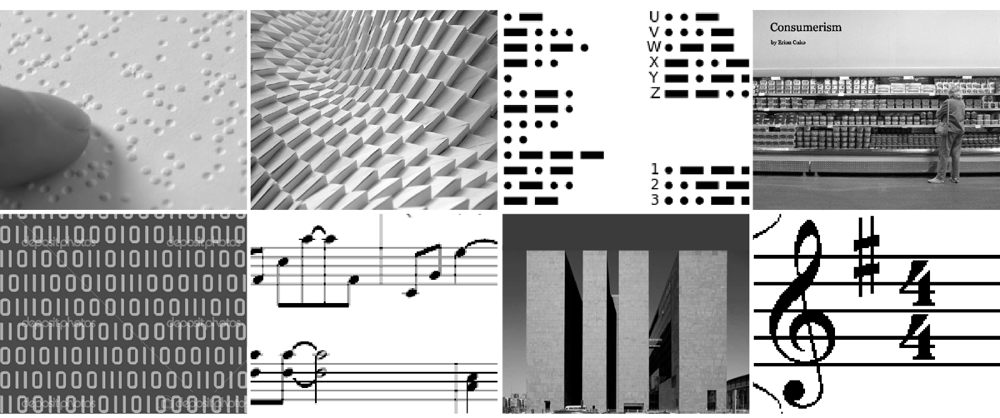
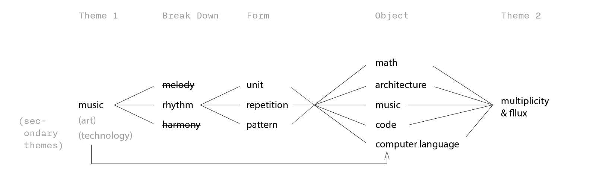

Project: Linebreak Media Festival
Organization: Universität der Künste Berlin
My Role: Conception, development, and execution of festival branding
Date: 04/2012–08/2012
Linebreak is a Berlin based festival that encourages interdisciplinary discussion through a series of workshops, lectures, and activities. I participated in the event as part of the branding team in 2012. We were challenged to investigate the event subjects through a common lens of music. Here shown is a version of my concept.

Event Subjects: art, design, and technology
Tone: exciting, unconventional, experimental
Unifying lens: an interpretation of music
I started by asking the question: what is music? I aimed to dig beneath conventional representations of music, and used visuals for brain dump and idea generation. Images are noted even if they appear to belong in widely different categories.The step is followed by a mind map exercise, where I attempted to make sense of visual associations and analyze them through words and diagram. Terms are broken down in meaning, filtered/selected, and further expanded. They are also grouped and connected to allow for shifts between form, object, and theme.I experimented with this way of working to investigate my perceptions of music. Starting with an abstract notion of "music", I was able to delineate tangible forms and associations and arrive at a bigger theme—one that is not only relevant to the festival subjects, but to our contemporary environment as well.
Visual Brainstorm
Mindmap
Here is an example of form studies, which are used to emulate, capture, and synthesize ideas in previous research. The activity also provides the foundation for design elements in the final identity system. Key ideas explored in this activity include unit, repetition, and pattern.